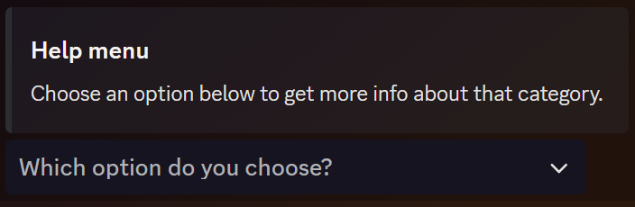
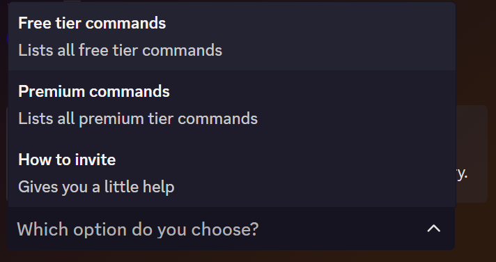
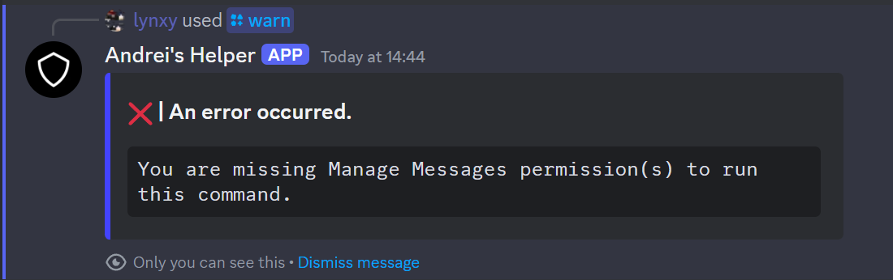
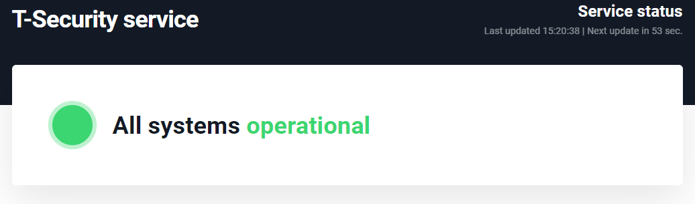

Other Features
Advanced Help Command
An interactive help menu.


Kick & Ban Commands
Commands that only work with certain permissions.

Automatically Updating Verify Message
Whenever the bot restarts buttons don't work anymore. So when the bot is back online, it removes the old, not working, verify message and sends a new one.


(Notice the timestamps)
Bot Status
Making use of flask servers to check if the server that hosts the bot is online.

(The uptimerobot site is not developed by me.)